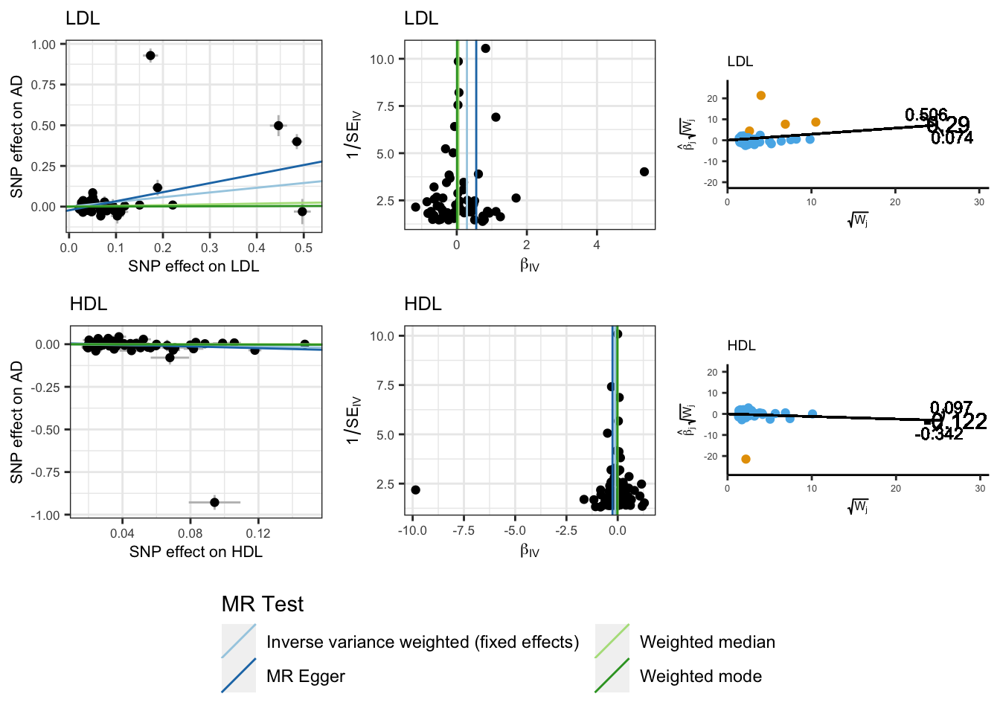

Hemani, G. et al. The MR-Base platform supports systematic causal inference across the human phenome. Elife 7, e34408 (2018)
Yavorska, O. O. & Burgess, S. MendelianRandomization: an R package for performing Mendelian randomization analyses using summarized data. Int J Epidemiol 46, dyx034 (2017).
Sanderson, E., Spiller, W. & Bowden, J. Testing and correcting for weak and pleiotropic instruments in two‐sample multivariable Mendelian randomization. Stat Med 40, 5434–5452 (2021).
Woolf, B., Gill, D., Grant, A. J. & Burgess, S. MVMRmode: Introducing an R package for plurality valid estimators for multivariable Mendelian randomisation. medRxiv (2023).
Multivariable MR: Used to estimate the causal relationships between multiple exposures and a single outcome. It is particularly useful in situations where multiple exposures are related and have potential inter-related effects on the outcome of interest. MVMR can help to disentangle the complex relationships between these exposures and provide insights into their independent causal effects. Examples of situations where MVMR can be useful include the estimation of the independent effects of related risk factors such as lipid fractions on an outcome, or the assessment of the independent effects of a primary risk factor and a secondary mediator on a disease outcome.
Harmonizing SumStats for MVMR
MVMR involves the simultaneous use of multiple exposures as instrumental variables in the analysis of a single outcome. As such, harmonizing the exposure and outcome datasets for MVMR is a more complex process than in univariable MR as it requires conducting multiple clumping and proxy-variant procedures. The following is a step-by-step guide to harmonizing the exposure and outcome datasets for MVMR using LDL and HDL cholesterol levels as the exposures, and AD as the outcome.
Import datasets
Import LDL SumStats
exposure1_path ="resources/Willer2013ldl.chrall.CPRA_b37.tsv.gz"exposure1_ss <-read_tsv(exposure1_path, comment ="##", col_types = coltypes, col_select =c(DBSNP_ID, CHROM, POS, REF, ALT, AF, BETA, SE, Z, P, N, TRAIT))# Format data to TwoSampleMR formatexposure1 <- exposure1_ss %>%format_data(.,type ="exposure",snps =NULL,header =TRUE,phenotype_col ="TRAIT",snp_col ="DBSNP_ID",beta_col ="BETA",se_col ="SE",eaf_col ="AF",effect_allele_col ="ALT",other_allele_col ="REF",pval_col ="P",samplesize_col ="N",z_col ="Z",chr_col ="CHROM",pos_col ="POS",log_pval =FALSE) %>%as_tibble()
Import HDL SumStats
exposure2_path ="resources/Willer2013hdl.chrall.CPRA_b37.tsv.gz"exposure2_ss <-read_tsv(exposure2_path, comment ="##", col_types = coltypes, col_select =c(DBSNP_ID, CHROM, POS, REF, ALT, AF, BETA, SE, Z, P, N, TRAIT))# Format data to TwoSampleMR formatexposure2 <- exposure2_ss %>%format_data(.,type ="exposure",snps =NULL,header =TRUE,phenotype_col ="TRAIT",snp_col ="DBSNP_ID",beta_col ="BETA",se_col ="SE",eaf_col ="AF",effect_allele_col ="ALT",other_allele_col ="REF",pval_col ="P",samplesize_col ="N",z_col ="Z",chr_col ="CHROM",pos_col ="POS",log_pval =FALSE) %>%as_tibble()
Perform clumping to obtain independent genome-wide significant variants for each exposure. This step involves identifying the SNPs that are independently associated with each exposure and are significant at the genome-wide level.
There are 79 and 89 independent genome-wide significant SNPS for LDL and HDL respectivly.
Combine Exposures
## Make list of distinct SNPs from the exposures independent GWS snps mvmr_snps <-bind_rows(select(exposure1_dat, SNP), select(exposure2_dat, SNP), ) %>%distinct(SNP) %>%pull(SNP)## extract combined SNP list from exposure datasets comb_exp <-bind_rows( exposure1 %>%filter(SNP %in% mvmr_snps), exposure2 %>%filter(SNP %in% mvmr_snps),)
Combine the exposure SNP lists and extract all the SNPs from each exposure. This step combines the lists of SNPs for each exposure and extracts all the SNPs that are present in each exposure.
Combine Exposures
## Unique SNP ids across exposuresexp_snp_list <-full_join(select(exposure1_dat, SNP, exposure), select(exposure2_dat, SNP, exposure), by ='SNP')exp1_unq_snps <-filter(exp_snp_list, !is.na(exposure.x) &is.na(exposure.y)) %>%nrow()exp2_unq_snps <-filter(exp_snp_list, !is.na(exposure.y) &is.na(exposure.x)) %>%nrow()both_unq_snps <-filter(exp_snp_list, !is.na(exposure.y) &!is.na(exposure.x)) %>%nrow()
There are 164 unique SNPs across the LDL and HDL SNP list - 75 unique to LDL, 85 to HDL, and 4 that are shared.
Extracting these 164 SNPs from the LDL and HDL SumStats we get the following count of genome-wide significant SNPs across both traits.
Identify proxy variants for any SNPs that are missing in each exposure. This step involves identifying proxy variants for any SNPs that are not present in each exposure dataset. This is necessary to ensure that the exposure datasets are complete and that all relevant SNPs are included in the analysis.
Note
There are no missing variants between the LDL &HDL SumStats, as such there is no need identify proxy variants
Perform LD clumping on the combined SNP list to retain indepdent SNPs. This step is performed to reduce the risk of spurious results arising due to multi-collinearity by including correlated SNPs. LD clumping identifies lead SNPs in each locus and discards the remaining SNPs that are in linkage disequilibrium with them.
Clump Combined Exposures
## Do another round of LD clumping clump_comb_exp <- comb_exp_wide %>%clump_data(.,clump_kb =10000,clump_r2 =0.001,clump_p1 =1,clump_p2 =1,pop ="EUR")comb_exp_independent <- comb_exp %>%filter(SNP %in% clump_comb_exp$SNP)
Due to the high correlation among genetic variants, the GWAS of HDL and LDL may identify loci in the same genomic region. After LD clumping on the smallest p-value from the exposures, we retained 136 of the initial 164 SNPs, ensuring that we included only independent variants in the analysis.
LDL < 5e-08
HDL < 5e-08
n
FALSE
TRUE
66
TRUE
FALSE
57
TRUE
TRUE
13
Outcome
Extract exposures SNPs from the outcome GWAS. This step involves extracting the SNPs that are associated with the exposures from the genome-wide association study of the outcome.
Extract Exposure SNPs from Outcome
# extract exposure SNPs present in outcomeoutcome_clump <-semi_join( outcome, comb_exp_independent, by ="SNP")# Exposure SNPs not present in outomceoutcome_wo_snps <-anti_join( comb_exp_independent, outcome, by ="SNP") %>%distinct(SNP)
Of the 136 exposures SNPs, 135 are available in the AD SumStats - with 1 variant missing.
Identify proxy variants for any SNPs that missing in the outcome. This step involves identifying proxy variants for any SNPs that are not present in the outcome dataset. This is necessary to ensure that the outcome dataset is complete and that all relevant SNPs are included in the analysis.
Extract proxy SNPs for outcome
# Use LDLinkR to identify proxy snpsLDproxy_batch(outcome_wo_snps, pop ="CEU", r2d ="r2", token ='a6deee62cc4a', append =TRUE,genome_build ="grch37")
Submitting request for query variant rs2729816.
Checking status of server...Combined file for all query variants saved to:
/Users/sheaandrews/gitcode/MR-tutorial/combined_query_snp_list_grch37.txt
Extract proxy SNPs for outcome
system("mv combined_query_snp_list_grch37.txt data/mvmr_proxy_snps.txt")# Munge proxy snp fileoutcome_dat <-munge_proxies("data/mvmr_proxy_snps.txt", outcome, outcome_clump)
Harmonize
Harmonize exposure and outcome datasets. In order to perform MR the effect of a SNP on an outcome and exposure must be harmonised to be relative to the same allele.
Radial IVW
Estimate Std.Error t value Pr(>|t|)
Effect (Mod.2nd) -0.1223808 0.11024660 -1.110064 0.2669712358
Iterative -0.1223809 0.11024665 -1.110065 0.2669710759
Exact (FE) -0.1365797 0.04139487 -3.299436 0.0009687925
Exact (RE) -0.1242786 0.09937333 -1.250623 0.2149596925
Residual standard error: 2.664 on 75 degrees of freedom
F-statistic: 1.23 on 1 and 75 DF, p-value: 0.271
Q-Statistic for heterogeneity: 532.1109 on 75 DF , p-value: 4.739116e-70
Outliers detected
Number of iterations = 3
Radial IVW
Estimate Std.Error t value Pr(>|t|)
Effect (Mod.2nd) 0.2897672 0.1082519 2.676786 7.433216e-03
Iterative 0.2897684 0.1082525 2.676782 7.433288e-03
Exact (FE) 0.3190728 0.0356857 8.941193 3.849920e-19
Exact (RE) 0.2930763 0.1527847 1.918230 5.934461e-02
Residual standard error: 3.035 on 67 degrees of freedom
F-statistic: 7.17 on 1 and 67 DF, p-value: 0.00934
Q-Statistic for heterogeneity: 617.3408 on 67 DF , p-value: 5.309971e-90
Outliers detected
Number of iterations = 3
Using the core univariable MR methods, we observe that higher genetically predicted LDL and HDL are associated with increased and reduced risk of AD respectively.
Univariable MR Results
outcome
exposure
method
nsnp
b
se
pval
AD
LDL
Inverse variance weighted (fixed effects)
68
0.29
0.04
3.3 × 10−16
AD
LDL
MR Egger
68
0.56
0.16
6.6 × 10−4
AD
LDL
Weighted median
68
0.05
0.06
0.451
AD
LDL
Weighted mode
68
0.01
0.06
0.901
AD
HDL
Inverse variance weighted (fixed effects)
76
−0.12
0.04
0.003
AD
HDL
MR Egger
76
−0.25
0.20
0.214
AD
HDL
Weighted median
76
0.00
0.07
0.998
AD
HDL
Weighted mode
76
−0.02
0.07
0.795
However, as with total cholesterol levels we observe significant heterogeneity suggesting that the IVW estimates are likely to be biased.
Heterogenity tests for univariable MR
outcome
exposure
method
Q
Q_df
Q_pval
AD
LDL
MR Egger
576.56
66
1.4 × 10−82
AD
LDL
Inverse variance weighted
623.54
67
3.3 × 10−91
AD
HDL
MR Egger
528.75
74
7.5 × 10−70
AD
HDL
Inverse variance weighted
533.03
75
3.2 × 10−70
Egger intercept tests for pleiotropy
outcome
exposure
egger_intercept
se
pval
AD
LDL
−0.02
0.01
0.024
AD
HDL
0.01
0.01
0.442
Plots for MR results
scatter_p <-mr_scatter_plot(mr_res, mrdat)funnel_p <-mr_funnel_plot(res_single)radial_p <-map(radial_res, function(x){plot_radial(x, radial_scale = F, show_outliers = F) })joint_mr_p <- cowplot::plot_grid( scatter_p[[1]] +labs(title ="LDL") +theme_bw() +theme(legend.position ='none', text =element_text(size =8)), funnel_p[[1]] +labs(title ="LDL") +theme_bw() +theme(legend.position ='none', text =element_text(size =8)), radial_p[[2]] +labs(title ="LDL") +coord_fixed(ratio=0.25) +theme(legend.position ='none', text =element_text(size =6)), scatter_p[[2]] +labs(title ="HDL") +theme_bw() +theme(legend.position ='none', text =element_text(size =8)), funnel_p[[2]] +labs(title ="HDL") +theme_bw() +theme(legend.position ='none', text =element_text(size =8)), radial_p[[1]] +labs(title ="HDL") +coord_fixed(ratio=0.25) +theme(legend.position ='none', text =element_text(size =6)) )legend_scatter <- cowplot::get_legend(# create some space to the left of the legend scatter_p[[1]] +theme(legend.box.margin =margin(12, 12, 12, 12)))# add the legend to the row we made earlier. Give it one-third of # the width of one plot (via rel_widths).scatter_out.p <- cowplot::plot_grid(joint_mr_p, legend_scatter, rel_heights =c(4, 1), nrow =2)scatter_out.p

Extending these analyses into a multivariable framework we are able to determine the independent effects of LDL and HDL cholesterol levels on AD. We observed that higher genetically predicted LDL remains significantly causally associated with increased AD risk, while the causal effect of HDL on AD is now non-significant.
MVMR analysis
mvmr_res <-mv_multiple(mvdat, plots = F)
MVMR Results
exposure
outcome
nsnp
b
se
pval
LDL
AD
68
0.27
0.08
8.7 × 10−4
HDL
AD
76
−0.12
0.09
0.201
MVMR package
The MVMR R package can be used to perform multivariable Mendelian randomization analyses, which includes heterogeneity statistics to assess the strength and validity of the instruments. Additionally, it can evaluate conditional instrument strength and pleiotropic bias.
Q-Statistic for instrument validity:
681.9149 on 130 DF , p-value: 1.007841e-75
Note
Calculating heterogeneity statistics requires the covariance between the effect of the genetic variants on each exposure to be known. This can either be estimated from individual level data, be assumed to be zero, or fixed at zero using non-overlapping samples of each exposure GWAS.
Here, Q- and F-statistics are estimated assuming a genetic covariance of 0. Phenotypic correlations can calcuated from summary statistics using PhenoSpD.
RMVMR
Radial MVMR is an extension of the MVMR package to perform radial multivariable Mendelian randomization analyses, including generating radial-MVMR plots to show the causal effect of each exposure on the outcome.
Multivariable MR allows estimation of causal relationships between multiple exposures and a single outcome. In univariable MR, we observed that HDL cholesterol levels are associated with a reduced risk of AD, while LDL cholesterol is associated with an increased risk. However, both exposures are highly correlated, and it is difficult to estimate the independent effects of HDL and LDL cholesterol on AD. Using MVMR, we found that after adjusting for the effects of LDL cholesterol, HDL cholesterol was no longer independently associated with AD. This suggests that the observed association between HDL cholesterol and AD risk in univariable MR analyses may be driven by the shared effects of LDL cholesterol.